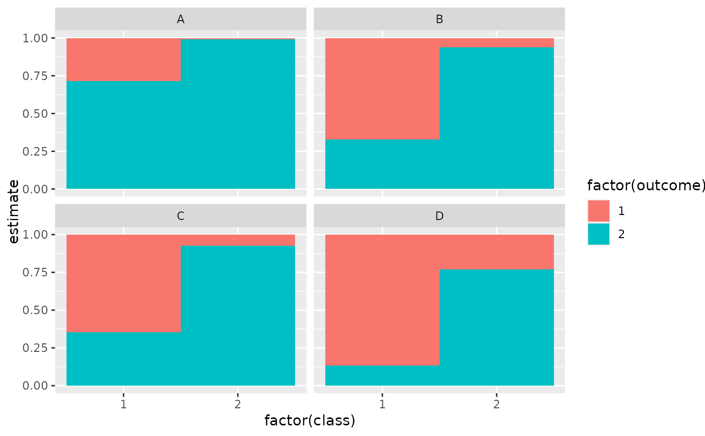
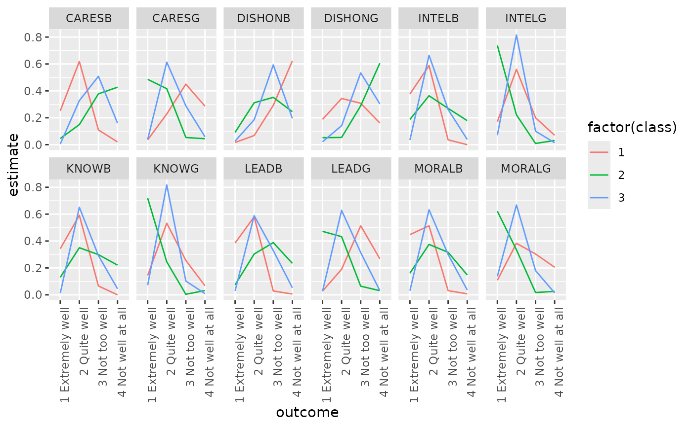

Glance accepts a model object and returns a tibble::tibble()
with exactly one row of model summaries. The summaries are typically
goodness of fit measures, p-values for hypothesis tests on residuals,
or model convergence information.
Glance never returns information from the original call to the modeling function. This includes the name of the modeling function or any arguments passed to the modeling function.
Glance does not calculate summary measures. Rather, it farms out these
computations to appropriate methods and gathers the results together.
Sometimes a goodness of fit measure will be undefined. In these cases
the measure will be reported as NA.
Glance returns the same number of columns regardless of whether the
model matrix is rank-deficient or not. If so, entries in columns
that no longer have a well-defined value are filled in with an NA
of the appropriate type.
Usage
# S3 method for poLCA
glance(x, ...)Arguments
- x
A
poLCAobject returned frompoLCA::poLCA().- ...
Additional arguments. Not used. Needed to match generic signature only. Cautionary note: Misspelled arguments will be absorbed in
..., where they will be ignored. If the misspelled argument has a default value, the default value will be used. For example, if you passconf.lvel = 0.9, all computation will proceed usingconf.level = 0.95. Two exceptions here are:
See also
Other poLCA tidiers:
augment.poLCA(),
tidy.poLCA()
Value
A tibble::tibble() with exactly one row and columns:
- AIC
Akaike's Information Criterion for the model.
- BIC
Bayesian Information Criterion for the model.
- chi.squared
The Pearson Chi-Square goodness of fit statistic for multiway tables.
- df
Degrees of freedom used by the model.
- df.residual
Residual degrees of freedom.
- logLik
The log-likelihood of the model. [stats::logLik()] may be a useful reference.
- nobs
Number of observations used.
- g.squared
The likelihood ratio/deviance statistic
Examples
# load libraries for models and data
library(poLCA)
library(dplyr)
# generate data
data(values)
f <- cbind(A, B, C, D) ~ 1
# fit model
M1 <- poLCA(f, values, nclass = 2, verbose = FALSE)
M1
#> Conditional item response (column) probabilities,
#> by outcome variable, for each class (row)
#>
#> $A
#> Pr(1) Pr(2)
#> class 1: 0.2864 0.7136
#> class 2: 0.0068 0.9932
#>
#> $B
#> Pr(1) Pr(2)
#> class 1: 0.6704 0.3296
#> class 2: 0.0602 0.9398
#>
#> $C
#> Pr(1) Pr(2)
#> class 1: 0.6460 0.3540
#> class 2: 0.0735 0.9265
#>
#> $D
#> Pr(1) Pr(2)
#> class 1: 0.8676 0.1324
#> class 2: 0.2309 0.7691
#>
#> Estimated class population shares
#> 0.7208 0.2792
#>
#> Predicted class memberships (by modal posterior prob.)
#> 0.6713 0.3287
#>
#> =========================================================
#> Fit for 2 latent classes:
#> =========================================================
#> number of observations: 216
#> number of estimated parameters: 9
#> residual degrees of freedom: 6
#> maximum log-likelihood: -504.4677
#>
#> AIC(2): 1026.935
#> BIC(2): 1057.313
#> G^2(2): 2.719922 (Likelihood ratio/deviance statistic)
#> X^2(2): 2.719764 (Chi-square goodness of fit)
#>
# summarize model fit with tidiers + visualization
tidy(M1)
#> Warning: 'as.is' should be specified by the caller; using TRUE
#> # A tibble: 16 × 5
#> variable class outcome estimate std.error
#> <chr> <int> <dbl> <dbl> <dbl>
#> 1 A 1 1 0.286 0.0393
#> 2 A 2 1 0.00681 0.0254
#> 3 A 1 2 0.714 0.0393
#> 4 A 2 2 0.993 0.0254
#> 5 B 1 1 0.670 0.0489
#> 6 B 2 1 0.0602 0.0649
#> 7 B 1 2 0.330 0.0489
#> 8 B 2 2 0.940 0.0649
#> 9 C 1 1 0.646 0.0482
#> 10 C 2 1 0.0735 0.0642
#> 11 C 1 2 0.354 0.0482
#> 12 C 2 2 0.927 0.0642
#> 13 D 1 1 0.868 0.0379
#> 14 D 2 1 0.231 0.0929
#> 15 D 1 2 0.132 0.0379
#> 16 D 2 2 0.769 0.0929
augment(M1)
#> # A tibble: 216 × 7
#> A B C D X.Intercept. .class .probability
#> <dbl> <dbl> <dbl> <dbl> <dbl> <int> <dbl>
#> 1 2 2 2 2 1 2 0.959
#> 2 2 2 2 2 1 2 0.959
#> 3 2 2 2 2 1 2 0.959
#> 4 2 2 2 2 1 2 0.959
#> 5 2 2 2 2 1 2 0.959
#> 6 2 2 2 2 1 2 0.959
#> 7 2 2 2 2 1 2 0.959
#> 8 2 2 2 2 1 2 0.959
#> 9 2 2 2 2 1 2 0.959
#> 10 2 2 2 2 1 2 0.959
#> # … with 206 more rows
glance(M1)
#> # A tibble: 1 × 8
#> logLik AIC BIC g.squared chi.squared df df.residual nobs
#> <dbl> <dbl> <dbl> <dbl> <dbl> <dbl> <dbl> <int>
#> 1 -504. 1027. 1057. 2.72 2.72 9 6 216
library(ggplot2)
ggplot(tidy(M1), aes(factor(class), estimate, fill = factor(outcome))) +
geom_bar(stat = "identity", width = 1) +
facet_wrap(~variable)
#> Warning: 'as.is' should be specified by the caller; using TRUE

# three-class model with a single covariate.
data(election)
f2a <- cbind(
MORALG, CARESG, KNOWG, LEADG, DISHONG, INTELG,
MORALB, CARESB, KNOWB, LEADB, DISHONB, INTELB
) ~ PARTY
nes2a <- poLCA(f2a, election, nclass = 3, nrep = 5, verbose = FALSE)
td <- tidy(nes2a)
#> Warning: 'as.is' should be specified by the caller; using TRUE
td
#> # A tibble: 144 × 5
#> variable class outcome estimate std.error
#> <chr> <int> <fct> <dbl> <dbl>
#> 1 MORALG 1 1 Extremely well 0.108 0.0175
#> 2 MORALG 2 1 Extremely well 0.137 0.0182
#> 3 MORALG 3 1 Extremely well 0.622 0.0309
#> 4 MORALG 1 2 Quite well 0.383 0.0274
#> 5 MORALG 2 2 Quite well 0.668 0.0247
#> 6 MORALG 3 2 Quite well 0.335 0.0293
#> 7 MORALG 1 3 Not too well 0.304 0.0253
#> 8 MORALG 2 3 Not too well 0.180 0.0208
#> 9 MORALG 3 3 Not too well 0.0172 0.00841
#> 10 MORALG 1 4 Not well at all 0.205 0.0243
#> # … with 134 more rows
ggplot(td, aes(outcome, estimate, color = factor(class), group = class)) +
geom_line() +
facet_wrap(~variable, nrow = 2) +
theme(axis.text.x = element_text(angle = 90, hjust = 1))

au <- augment(nes2a)
au
#> # A tibble: 1,300 × 16
#> MORALG CARESG KNOWG LEADG DISHONG INTELG MORALB CARESB KNOWB LEADB
#> <fct> <fct> <fct> <fct> <fct> <fct> <fct> <fct> <fct> <fct>
#> 1 3 Not too … 1 Ext… 2 Qu… 2 Qu… 3 Not … 2 Qui… 1 Ext… 1 Ext… 2 Qu… 2 Qu…
#> 2 1 Extremel… 2 Qui… 2 Qu… 1 Ex… 3 Not … 2 Qui… 2 Qui… 2 Qui… 2 Qu… 3 No…
#> 3 2 Quite we… 2 Qui… 2 Qu… 2 Qu… 2 Quit… 2 Qui… 2 Qui… 3 Not… 2 Qu… 2 Qu…
#> 4 2 Quite we… 4 Not… 2 Qu… 3 No… 2 Quit… 2 Qui… 1 Ext… 1 Ext… 2 Qu… 2 Qu…
#> 5 2 Quite we… 2 Qui… 2 Qu… 2 Qu… 3 Not … 2 Qui… 3 Not… 4 Not… 4 No… 4 No…
#> 6 2 Quite we… 2 Qui… 2 Qu… 3 No… 4 Not … 2 Qui… 2 Qui… 3 Not… 2 Qu… 2 Qu…
#> 7 1 Extremel… 1 Ext… 1 Ex… 1 Ex… 4 Not … 1 Ext… 2 Qui… 4 Not… 2 Qu… 3 No…
#> 8 2 Quite we… 2 Qui… 2 Qu… 2 Qu… 3 Not … 2 Qui… 3 Not… 2 Qui… 2 Qu… 2 Qu…
#> 9 2 Quite we… 2 Qui… 2 Qu… 2 Qu… 3 Not … 2 Qui… 2 Qui… 2 Qui… 2 Qu… 3 No…
#> 10 2 Quite we… 3 Not… 2 Qu… 2 Qu… 3 Not … 2 Qui… 2 Qui… 4 Not… 2 Qu… 4 No…
#> # … with 1,290 more rows, and 6 more variables: DISHONB <fct>,
#> # INTELB <fct>, X.Intercept. <dbl>, PARTY <dbl>, .class <int>,
#> # .probability <dbl>
count(au, .class)
#> # A tibble: 3 × 2
#> .class n
#> <int> <int>
#> 1 1 444
#> 2 2 496
#> 3 3 360
# if the original data is provided, it leads to NAs in new columns
# for rows that weren't predicted
au2 <- augment(nes2a, data = election)
au2
#> # A tibble: 1,785 × 20
#> MORALG CARESG KNOWG LEADG DISHONG INTELG MORALB CARESB KNOWB LEADB
#> <fct> <fct> <fct> <fct> <fct> <fct> <fct> <fct> <fct> <fct>
#> 1 3 Not too … 1 Ext… 2 Qu… 2 Qu… 3 Not … 2 Qui… 1 Ext… 1 Ext… 2 Qu… 2 Qu…
#> 2 4 Not well… 3 Not… 4 No… 3 No… 2 Quit… 2 Qui… NA NA 2 Qu… 3 No…
#> 3 1 Extremel… 2 Qui… 2 Qu… 1 Ex… 3 Not … 2 Qui… 2 Qui… 2 Qui… 2 Qu… 3 No…
#> 4 2 Quite we… 2 Qui… 2 Qu… 2 Qu… 2 Quit… 2 Qui… 2 Qui… 3 Not… 2 Qu… 2 Qu…
#> 5 2 Quite we… 4 Not… 2 Qu… 3 No… 2 Quit… 2 Qui… 1 Ext… 1 Ext… 2 Qu… 2 Qu…
#> 6 2 Quite we… 3 Not… 3 No… 2 Qu… 2 Quit… 2 Qui… 2 Qui… NA 3 No… 2 Qu…
#> 7 2 Quite we… NA 2 Qu… 2 Qu… 4 Not … 2 Qui… NA 3 Not… 2 Qu… 2 Qu…
#> 8 2 Quite we… 2 Qui… 2 Qu… 2 Qu… 3 Not … 2 Qui… 3 Not… 4 Not… 4 No… 4 No…
#> 9 2 Quite we… 2 Qui… 2 Qu… 3 No… 4 Not … 2 Qui… 2 Qui… 3 Not… 2 Qu… 2 Qu…
#> 10 1 Extremel… 1 Ext… 1 Ex… 1 Ex… 4 Not … 1 Ext… 2 Qui… 4 Not… 2 Qu… 3 No…
#> # … with 1,775 more rows, and 10 more variables: DISHONB <fct>,
#> # INTELB <fct>, VOTE3 <dbl>, AGE <dbl>, EDUC <dbl>, GENDER <dbl>,
#> # PARTY <dbl>, .class <int>, .probability <dbl>, .rownames <chr>
dim(au2)
#> [1] 1785 20